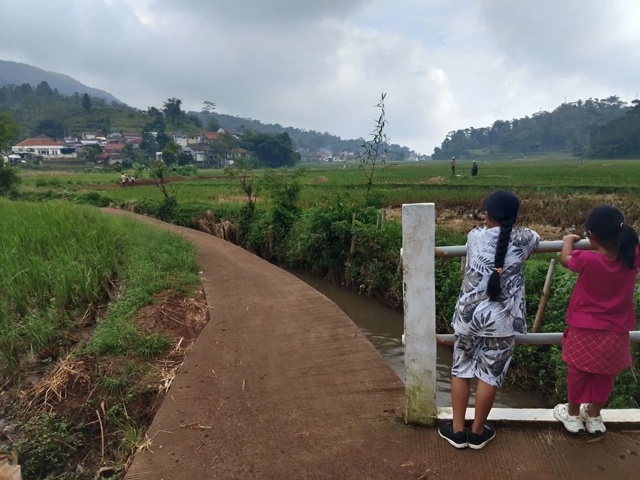
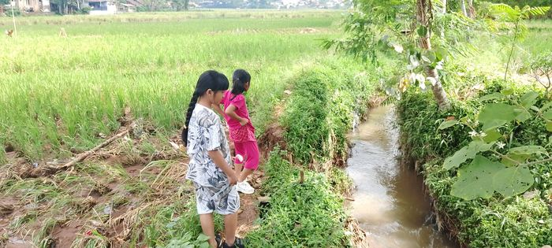
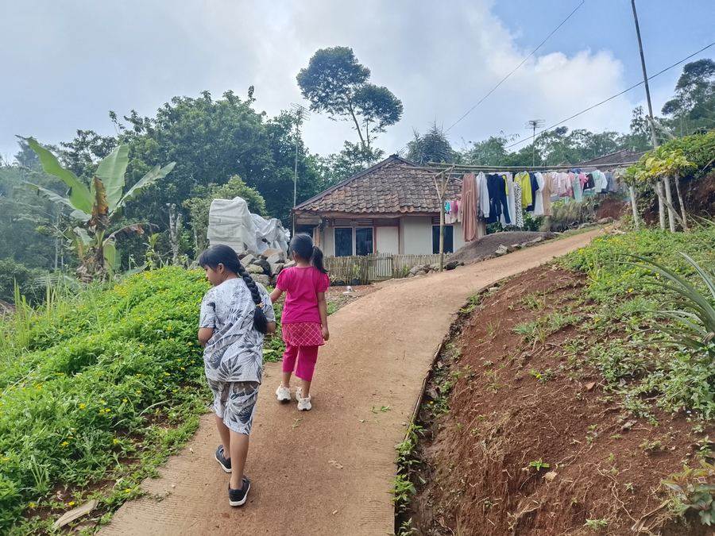
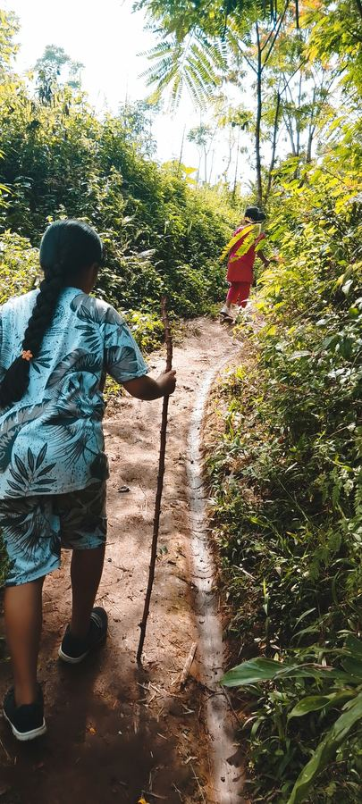
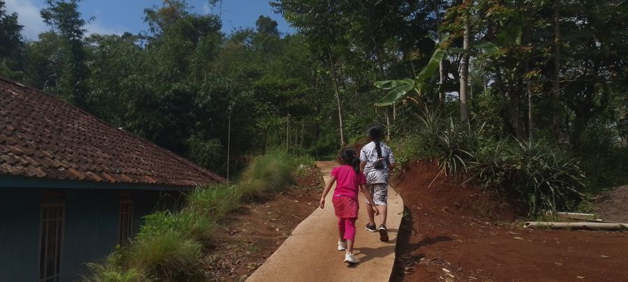
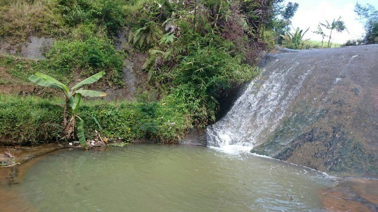
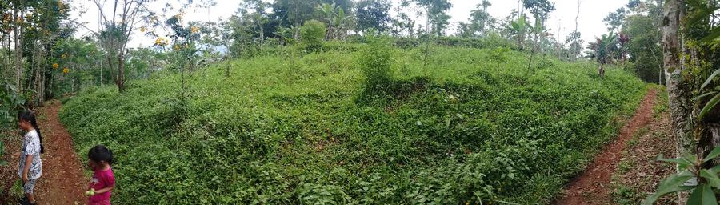
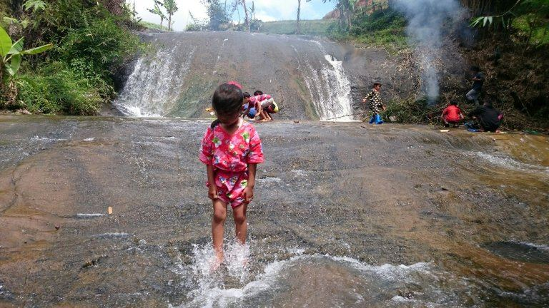
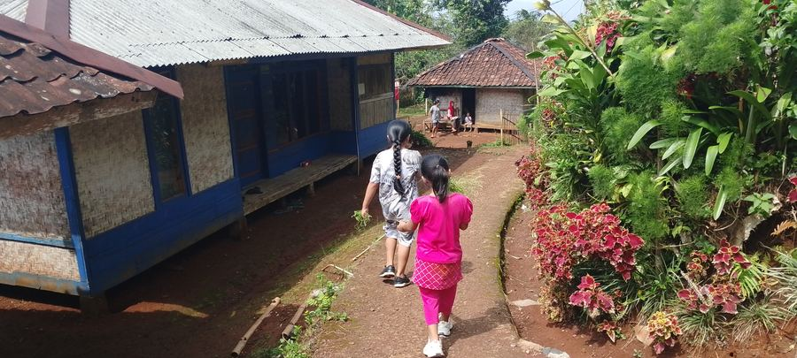

Rute 1
🌾 Panorama Sawah & Jembatan
Rute ramah untuk pemula dan keluarga. Menyusuri jalan setapak di sela hamparan sawah hijau, melewati jembatan irigasi dengan panorama gunung yang memukau, dan berinteraksi dengan petani lokal.

Irigasi Tradisional

Jalur Desa
📍 Checkpoint Jalur
1
Start: Bale Desa Cidadap
Titik kumpul & briefing pemandu
2
Jembatan Irigasi
Spot foto terbaik dengan latar sawah & gunung
3
Sudut Pandang Sawah
Area istirahat, snack lokal tersedia
4
Kampung Warga
Interaksi dengan petani & aktivitas desa
5
Finish: Warung Desa
Istirahat & kuliner lokal

Rute 2
🌲 Hutan Tropis & Kebun Kopi
Menelusuri kebun sayuran organik warga, perkebunan Kopi Robusta Cidadap, dan hutan bambu yang sejuk. Berakhir di Coffee Deck — menikmati kopi segar langsung di tengah kebun kopi yang rindang.

Jalur Hutan Bambu

Coffee Deck

Rute 3
⛰️ Perbukitan & Situ Cibeureum
Mendaki perbukitan hijau dengan panorama 360°, melewati Curug Badak yang segar, dan berakhir di tepian Situ Cibeureum untuk wisata mancing atau rakit apung.

Panorama Perbukitan Cidadap

Curug Badak

Situ Cibeureum
Pengalaman Budaya
🏡 Menyusuri Kampung Warga

Setiap rute melewati kampung warga Desa Cidadap yang hangat dan bersahaja. Sapa petani di sawah, lihat aktivitas sehari-hari, dan rasakan keramahan budaya Sunda yang sesungguhnya.
Destinasi Istimewa
☕ Coffee Deck Cidadap
Pengalaman unik menikmati Kopi Robusta Cidadap yang baru dipetik dan diseduh langsung di persimpangan kebun kopi yang dikelilingi pepohonan tropis yang rindang.
Destinasi Rute 3
🎣 Situ Cibeureum
Danau alami Situ Cibeureum menawarkan ketenangan dan keindahan yang memukau. Tersedia wisata mancing, saung tepi danau, dan rakit apung bambu eksklusif.
Rakit Apung Situ Cibeureum
Bersantai di atas rakit bambu sambil menikmati refleksi pegunungan Cidadap di permukaan danau
Panduan Wisatawan
Info Praktis
💼 Yang Dibawa
- Tongkat jalan (sudah termasuk)
- Air minum 1L+
- Topi & sunscreen
- Jas hujan lipat
- Kamera / HP
- Uang tunai
📋 Syarat
- Usia min. 8 tahun
- Kondisi fisik sehat
- Maks 20 orang/grup
- Wajib ikut briefing
- Reservasi 3 hari sebelum
💰 Harga
- Rute 1: Rp 37.500/org
- Rute 2: Rp 52.500/org
- Rute 3: Rp 75.000/org
- Paket Grup diskon 10%
- Sudah termasuk pemandu
🚫 Dilarang
- Buang sampah sembarangan
- Merusak tanaman
- Tinggalkan rombongan
- Petik tanaman sendiri
- Bawa hewan peliharaan
Siap Menjelajah?
Hubungi kami untuk reservasi dan informasi lebih lanjut.
Pemandu lokal siap menemani perjalanan Anda.
📱 Hubungi via WhatsApp
Pemandu lokal siap menemani perjalanan Anda.
📸 @pokdarwiscidadap
🌐 desawisatacidadap.github.io